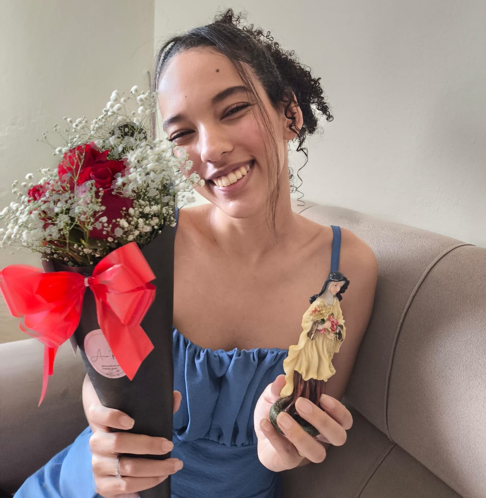
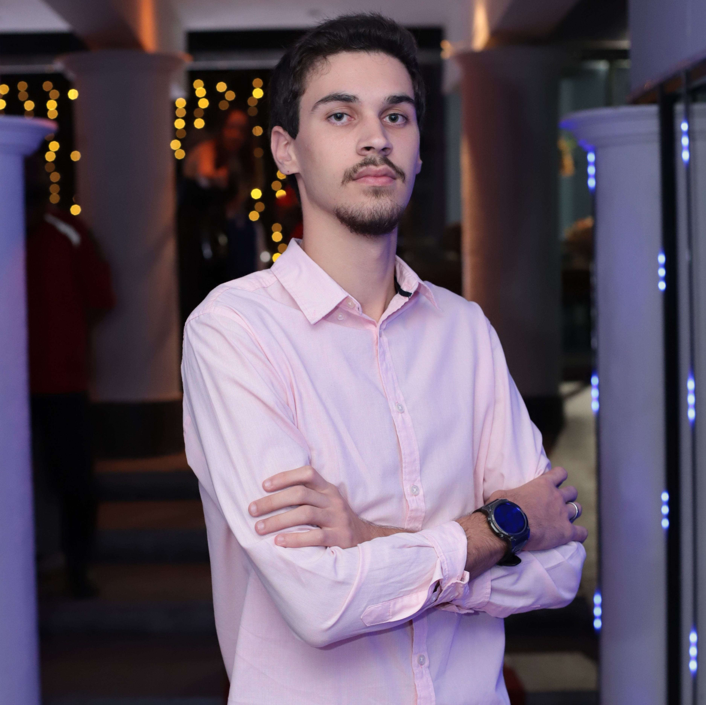

Meus sentimento por Aline Dias

"Aline Gonçalves Dias, o amor da minha vida, a pessoa que apareceu quando eu não estava procurando alguém, mas eu não sabia que eu precisava e ainda preciso para a vida toda ela na minha vida, seja para ser meu sol ou minha lua, pos sempre estará comigo. A cada dia que se passa eu vejo que estamos cada vez com uma conexão mais forte e, acho isso uma maravilha, pois estamos sempre rindo, nos comunicando, resolvendo problemas ou se divertindo com alguma situação. Com toda a certeza do mundo eu sou feliz ao lado dela, e apenas com ela, pois para mim nenhuma mulher vai ter 1% do que ela possui, seja por beleza, inteligência, humor e fé." Com muito amor, Caio Luís
Meus sentimentos por Caio Luís

"Caio Luís, eu te amo muito, te amo todos os dias e quero continuar te amando e ficando do seu lado para sempre, apesar ou mesmo que coisas ruins aconteçam. Sou uma pessoa que sente muito os conflitos, e que se a melhor opção nessa vida fosse não conversar sobre ou não ter que passar por eles, talvez eu dfizesse, se fosse cabeça dura ou por agir na mesma hora, mas como nada na vida é assim, e porque te amo, faço o contrário. Até porque não gosto de te ver trsite, e nem iria preferir ficar sem você, suas mensagens deixam os meus dias mais felizes e te ver deixa os meus fins de semana mais alegres. Além de querer ficar para sempre com você, espero ter sua companhia sempre nas missas, estar lá é bom, com você é melhor ainda". Com muito amor, Aline Dias